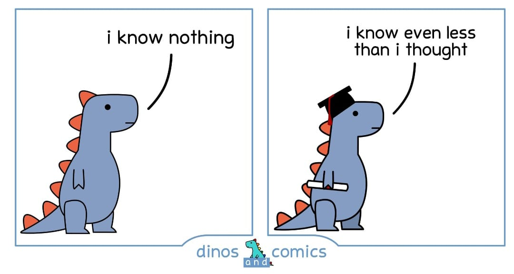

La guía de seminarios/memorias/tesis es una actividad de acompañamiento semestral que incluye:
presentaciones en el Coloquio de Investigación en Desigualdad y Ciudadanía
entrega de dos informes semestrales
reuniones de evaluación y asesoría
Se entregarán 2 informes durante el semestre, uno de avance y uno final.
Seminario de grado:
informe de avance: contempla la definición del problema de investigación, objeto de estudio, pregunta de investigación, revisión inicial de literatura, propuesta de sección metodológica disponibilidad de datos. (app. 1000 palabras).
informe final: debe incorporar los comentarios al informe de avance y avanzar en la propuesta metodológica incluyendo análisis preliminares univariados.
Seminario de título 1
informe de avance: ajuste de antecedentes conceptuales y finalización de sección metodológica.
informe final: incorporación de comentarios y avance de análisis bivariados
Seminario de título 2
informe de avance: finalización de análisis y contraste de hipótesis, borrador de conclusión
informe final: incorporación de comentarios y finalización de conclusiones.
seminaristas/tesisas se incorporan a canal de Slack, donde se comparte información relativa a las investigaciones y se hace entrega de los informes
la entrega puede ser en pdf o html. Se recomienda usar tesisfacsodown (video taller aquí), que permite ambas salidas. Documento de presentación aquí
los comentarios se realizarán mediante hypotes.is
Después de la entrega de cada informe, anotarse en los horarios de reunión con estudiantes para recibir retroalimentación
Presentar al menos 1 vez al semestre en el Coloquio de Investigación en Desigualdad y Ciudadanía.
Recomendaciones de escritura académica aquí, video sesión disponible aquí
Entrega de informes en formato (R)Markdown, html o pdf
Para facilitar el versionamiento de los informes y la entrega de comentarios se sugiere el uso de Git/Github
También por temas de apertura se recomienda inscribir el proyecto en el Open Science Framework
Fechas entrega informes
A acordar cada semestre. En general, el informe de avance se entrega el informe 1 semana después de la presentación, y el final la última semana del semestre.
Taller escritura académica 2021, link documento presentación
Manterola & Otzen (2013) Porqué Investigar y Cómo Conducir una Investigación
Formulación de una investigación cuantitativa (documento de presentación).